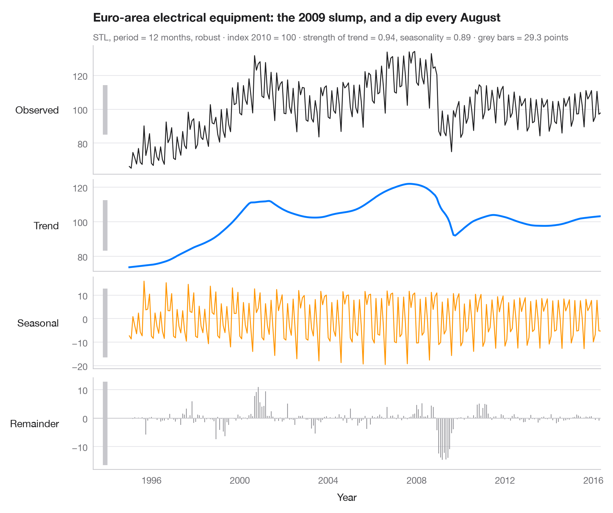

STL decomposition
A series split into trend, seasonal and remainder components in stacked panels.

STL (Seasonal–Trend decomposition using Loess) writes a series as observed = trend + seasonal + remainder. Each panel shares the time axis but has its own vertical scale, so the grey bar on the left of every panel — all of the same length in data units — shows how large each component really is: a short bar means a component that dominates, a long one a component that is small.
Data are the Mauna Loa atmospheric CO₂ measurements bundled with
statsmodels (sm.datasets.co2), resampled from weekly to monthly means with
gaps interpolated. The decomposition uses statsmodels.tsa.seasonal.STL with a
12-month period and robust fitting; the subtitle gives the strength of trend and
seasonality as defined by Wang, Smith & Hyndman (2006).
import matplotlib.pyplot as plt
import numpy as np
import statsmodels.api as sm
from statsmodels.tsa.seasonal import STL
# Data: Mauna Loa CO2, weekly -> monthly mean, gaps interpolated
co2 = sm.datasets.co2.load_pandas().data["co2"].resample("MS").mean().interpolate()
res = STL(co2, period=12, robust=True).fit()
parts = {"Observed": co2, "Trend": res.trend, "Seasonal": res.seasonal, "Remainder": res.resid}
colors = ["#1D1D1F", "#007AFF", "#FF9500", "#8E8E93"]
# Strength of trend and seasonality (0 = none, 1 = all the variation)
f_trend = max(0, 1 - res.resid.var() / (res.trend + res.resid).var())
f_seas = max(0, 1 - res.resid.var() / (res.seasonal + res.resid).var())
fig, axes = plt.subplots(4, 1, figsize=(9, 7.5), sharex=True,
gridspec_kw=dict(height_ratios=[1.4, 1, 1, 1]))
bar = 2 * res.resid.abs().max() # common scale bar, in ppm
x0 = co2.index[0] - np.timedelta64(400, "D")
for ax, (name, s), c in zip(axes, parts.items(), colors):
if name == "Remainder":
ax.vlines(s.index, 0, s, color=c, lw=0.8)
ax.axhline(0, color="#C7C7CC", lw=0.8)
else:
ax.plot(s.index, s, color=c, lw=2 if name == "Trend" else 1)
ax.set_ylabel(name, rotation=0, ha="right", va="center", labelpad=14)
# Scale bar: same height in ppm in every panel
mid = (s.max() + s.min()) / 2
ax.plot([x0, x0], [mid - bar / 2, mid + bar / 2], color="#C7C7CC", lw=5, solid_capstyle="butt",
clip_on=False)
axes[-1].set_xlabel("Year")
fig.align_ylabels(axes)
axes[0].set_xlim(x0 - np.timedelta64(200, "D"), co2.index[-1])
axes[0].set_title("CO₂ at Mauna Loa: a steady climb with a regular yearly cycle", pad=26)
axes[0].text(0, 1.04, f"STL, period = 12 months, robust · monthly means, ppm · strength of trend = "
f"{f_trend:.2f}, seasonality = {f_seas:.2f} · grey bars = {bar:.1f} ppm",
transform=axes[0].transAxes, fontsize=9.5, color="#6E6E73")
plt.show()
Figures use the optional Statlas style: add plt.style.use("statlas.mplstyle") to match the look exactly.
How to cite
Statlas is created and maintained by Thierry Warin. If it helped your work, please cite it.
Warin, T. (2026). STL decomposition. In Statlas: The Python Gallery of Statistical Graphics. https://warint.github.io/statlas/time-series/stl-decomposition/
@misc{warin2026statlas,
author = {Warin, Thierry},
title = {Statlas: The Python Gallery of Statistical Graphics},
year = {2026},
howpublished = {\url{https://warint.github.io/statlas/}},
note = {Source code: https://github.com/warint/statlas}
}More in Time series

ACF and PACF
Autocorrelation and partial autocorrelation lollipops with 95% significance bands.
forecast::ggtsdisplay()
SARIMA forecast
Seasonal ARIMA forecast with 80% and 95% prediction intervals against held-out data.
forecast::autoplot(forecast())
Seasonal subseries plot
Each calendar month's values across the years, with the monthly mean as a reference.
feasts::gg_subseries()